Our Honeymoon - April 1994
This was our first non-US vacation and our worst ever! We never took a single plane we were scheduled to take and did at least two mad runs through the airport with all our luggage. We ended up in the wrong airport in Houston and had to collect our bags and take a cab to Hobby under severe time constraints.
Our seats were terrible on the plane - next to the engines, they did not recline, and condensation ran along the ceiling and dripped right onto our shoulders. Once in Mexico we were selected for the extra customs search, then could not find our ride to the hotel.
If not for some nice English-speaking lady at the airport, we might not have made it the 50 miles south from Cancun to our resort. Then on arriving at the all-inclusive resort, exhausted, tired, and hungry, we were told that they had no record of our reservation or payment.
That's the point where I had a nervous breakdown. Eric, bless him, stepped up to the plate. He demanded, and got, a room. We stayed there the entire week and they never did find record of our payment.
Playa Del Carmen was brand new back then, we stayed in the very first hotel that was completed down there. I'm told it's quite developed now. Excuse us if we don't go back to find out!
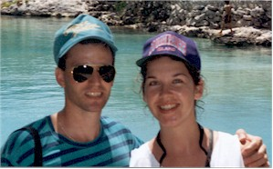
Here we are, geeks on vacation. Why didn't someone tell us to take off those stupid hats?!!!!
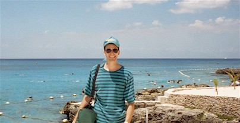
Eric at the place we went snorkeling on Cozumel. We took a ferry there from Playa Del Carmen.
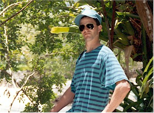
Eric, looking quite pleased with himself. This was our honeymoon, after all.
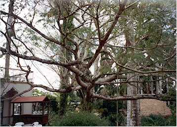
This was a 200-year-old tree near Chitzen Itza. It was huge and beautiful.
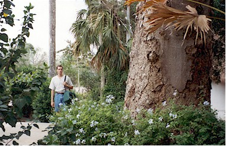
Here's Eric at the base of the tree. We're told they are hollow inside and were used as canoes by the Myans.
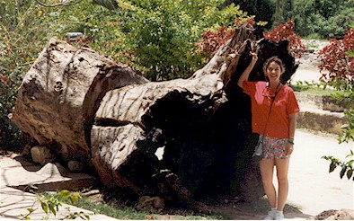
This is me by a dead one. What do you know, it is hollow!
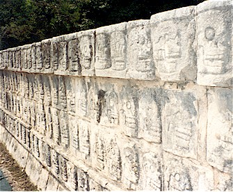
I'm sorry, I don't remember the deal with all those columns. You have to admit though, they're darned impressive.
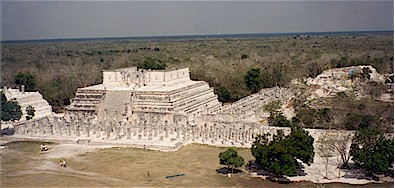
These are said to symbolize soldiers lost in battle.
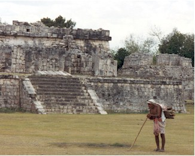
A little old Myan guy hauling firewood. What do you want to bet he carries that same bundle around every day, getting money from dumb tourists?!!
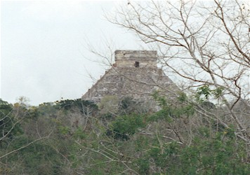
The view of the pyramid from the observatory.
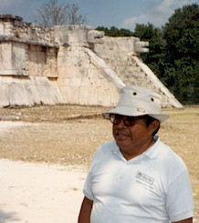
Our Myan tour guide, he was a funny little guy.
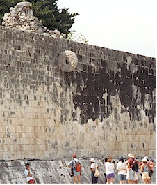
The ball field. The players had to get a small ball through that life-saver thing high on the wall. The main trick was, you couldn't use your hands.
The other trick being, of course, if you don't win you get your head chopped off. That has to mess with your concentration.
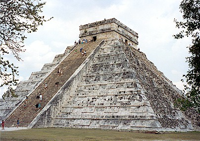
Pyramid at Chitzen Itza.
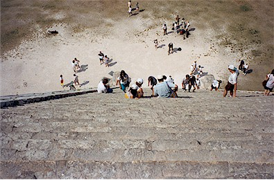
The view from the top. It was SO steep and the steps were made for feet about half the size of mine!
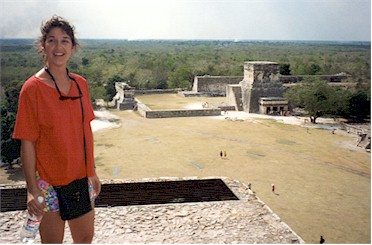
Looking out from on top. I think Eric was saying, "Move a little farther to the left honey"